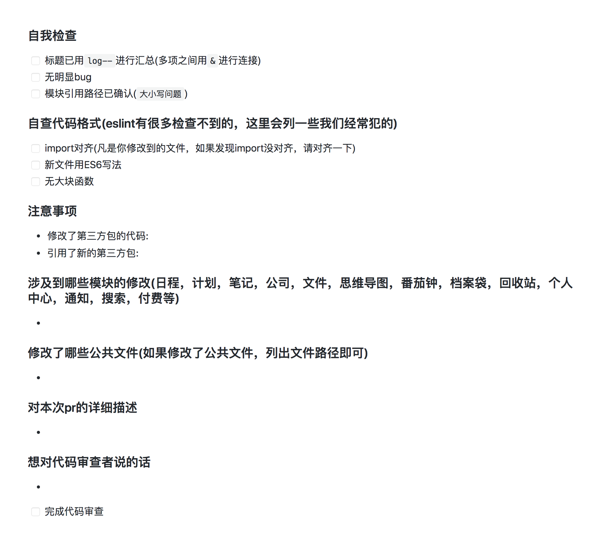
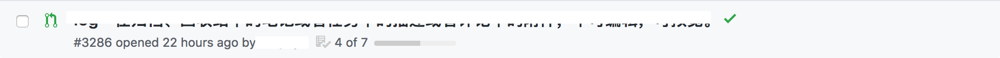
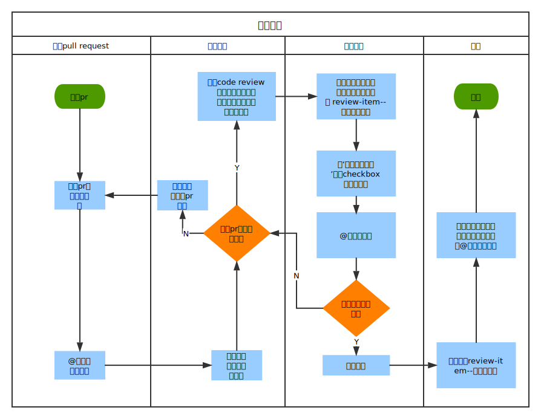

背景
这是一个很久之前我就想在前端团队里推的一个事情，基于这么几个原因吧:
- 一直以来，前端的代码审查都是我一个人在做，仅仅是关注大家对公共文件的修改，还有就是一些明显的逻辑问题，但其实大部分问题靠我一个人是发现不了的
- 我们自己总是容易陷入逻辑怪圈，在写代码的时候，很难发现自己的问题，但是看别人的代码的时候，往往比较挑剔，更容易发现别人的问题
- 促进我们的日常代码交流，吸收别人的优秀经验
- 当你知道某个人会审查你的代码的时候，你会更加严格要求自己
- 培养我们写出优秀代码的习惯，实现团队和个人的共同进步
- 我们需要更加关注代码的质量
- Code Review可以有效的和重构相结合，给我们重构提供有力证据，推动我们进行重构工作
审查些什么
审查清单
如果你所在的团队和我们一样，也刚开始做Code Review，对代码审查到底应该审查些什么感到茫然，在网上搜了很多审查清单，发现非常零碎，也不知道哪些应该遵守，哪些不应该遵守。我的建议是，可以根据团队现有的开发情况，自己大概整理一份审查清单，也不用太完整，只要建立好完整的整理机制，在实施Code Review的过程中，自己总结提炼，以及修改维护之前的审查清单，这样在完善审查清单的过程中，也对健全团队的Code Review机制非常有帮助，让团队成员对新增的审查清单更加有认同感。
代码格式
到底要不要在代码审查的时候审查代码的格式，都各说不一。个人觉得代码格式不应该成为代码审查重要的关注点，格式问题，更多应该是靠开发者自己去发现解决，借eslint和sass-lint这类工具辅助，以及团队的代码规范，在提交审核之前就应该做到没有问题。代码审查本来就是为了审核功能的实现方式，代码的组织形式等等有没有更优解，但也不是说完全不关注，如果发现了格式问题，还是需要提出来。
审查形式
总体来说，代码审查有两种形式，小片段式和大规模式
小片段式
小片段式的代码审查，又称事前审查，是在代码合并到主分支之前就做的一种审查形式。如果发现了问题，在代码合并之前就会进行需改。这种形式可以直接在线上进行，代码提交者和审查者可完全线上进行交流。
大规模式
大规模式的代码审查，又称事后审查，团队可以每两个星期或者一个月组织一次大模块式的Code Review会议，大家在会上进行大规模的代码检视，提出问题并记录，之后可以以重构的方式来处理在会议上发现的问题.
哪种形式更好
这两种形式各有各的好处，小片段式的方式让我们可以在审查较小代码量的情况下就能进行，并且可以在代码合并之前进行，这样可以提前发现一些bug，而大规模式可以几个人一起在会议上站在一个更高的层面去审核代码，彼此交流开发经验。我推荐是小片段式和大规模式相结合。
怎么审查
审查工具
我们的代码管理用的github，github提供了非常棒的Code Review功能。利用github提供的pull request模板功能，让代码提交者根据这个模板去填写每次提交pull request需要的信息。另外github的markdown支持checkbox，我们可以把一些非常重要的，每次都需要检视的审查项列到模板里去，这样提交者就可以按照这个列表自己提前检查一遍，也可以减少审查者的工作。下面是我们现在用的一个模板

前面6个checkbox，是提交者每次都必须自查一遍，然后打钩，这6个checkbox不打完钩，就不会进入正常的审查流程，最后一个checkbox是审查者在审查完了之后打钩，表示这个pull request没问题，可以进行合并。如果团队的代码审查和代码合并不是同一个人，那么负责合并的人可以在pull request列表里看到每个pull request的进度，如下图

如果所有checkbox已经完成，表示这个pull request可以进行合并
通知工具
用了github，当然是用github强大的邮件通知功能了。为了防止常用邮箱的通知爆炸，可以专门注册一个邮箱来接收github的邮件通知。推荐使用网易邮箱客户端，它有邮件分类功能，可以做到只通知部分邮件，防止打扰。
代码审查的一些心得
- 作为审查者，你需要知道你在给谁review代码
- 每个pull request应该尽可能的小，这样才能快速且安全的review
- 开放心态，虚心接受别人提的意见，要么采纳，要么说出自己反驳的理由
- 我们是人，不是机器，是人就会犯错，很正常
- 对公共文件的修改需要加倍关注，这些代码一旦出问题，会导致严重的错误
附上我们团队代码审查的流程图
